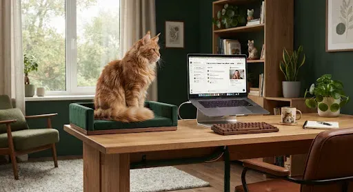
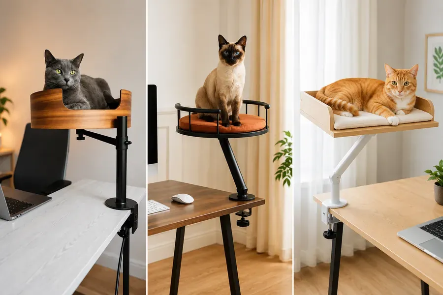
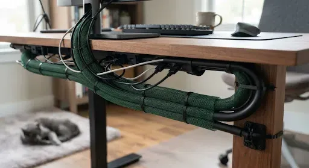
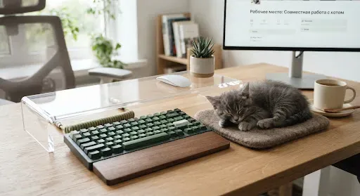

Tu zona de trabajo
Organizar una oficina en casa que sea amigable con los gatos requiere equilibrar tu comodidad con la seguridad de tu mascota.

01. Dividir el espacio
A los gatos les gusta estar en el centro de la acción. En lugar de espantarlos de la mesa, destínales una zona propia: un rincón junto a la ventana (ideal para observar pájaros) o un estante de una estantería cerca del escritorio para que el gato descanse.
Una buena opción es un estante con soportes que se fija a la mesa y puede girar en distintas direcciones: el gato estará cerca, pero sin interferir en tu zona de trabajo.

02. Organizar los cables
Canaletas protectoras — esconde las regletas en cajas especiales para evitar el acceso a los enchufes.
Tubos corrugados — usa tubos rígidos para los cables que el gato tienda a morder (cargadores, cables del monitor).

03. Proteger el teclado
El famoso «paseo sobre las teclas» puede provocar que se borren archivos por accidente o que se envíen mensajes extraños a tus compañeros.
Usa soportes puente de acrílico transparente sobre el teclado, o un «teclado señuelo»: un teclado viejo cerca puede distraer su atención.

04. Ergonomía y altura
Elige los muebles teniendo en cuenta tanto la capacidad de salto de tu mascota como tu propia salud.
Mesa regulable (recomendado): permite subir rápidamente la superficie de trabajo si el gato se pone demasiado insistente. Importante: ten en cuenta que, al cambiar la altura de la mesa, los mecanismos móviles y los huecos entre paneles pueden pillar al gato.
Estabilidad de la silla (importante): una base de cinco radios con ruedas que se puedan bloquear evitará que se vuelque si el gato salta de repente sobre el respaldo, o si se ha quedado dormido bajo las ruedas de la silla.
5Precaución: no se recomienda
Precaución
- Dejar una taza de café junto al portátil;
- usar velas aromáticas cerca del gato;
- tener medicamentos sobre la mesa;
- dejar tijeras abiertas;
- guardar hilos y gomas para el pelo en la zona de trabajo.
Más en esta sección
La información de la app procede de fuentes abiertas y de la experiencia de dueños de gatos. No sustituye la consulta ni la revisión de un veterinario. Las decisiones sobre la salud y el cuidado de tu mascota las toma su dueño: ante cualquier duda, consulta a un veterinario.
Todo esto está en la app Cat First
Artículos, listas de control y primeros auxilios en tu teléfono, incluso sin internet.